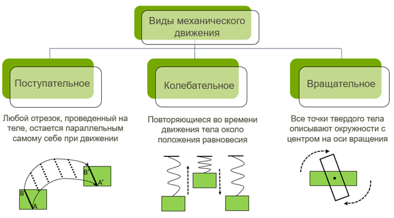
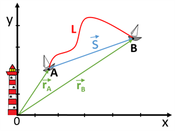

Модели тел, системы отсчета, равномерное и равноускоренное движение
Механическое движение — изменение положения тела в пространстве относительно других тел с течением времени.
Материальная точка — модель тела, размерами которого можно пренебречь в условиях данной задачи (например, эритроцит в кровеносном сосуде).
Система отсчета: Тело отсчета + Система координат + Часы. Любое движение относительно.
Тело за любые равные промежутки времени проходит одинаковый путь. Скорость постоянна.
Уравнение движения (координата тела в любой момент времени):
В реальной жизни тело чаще движется неравномерно. Если скорость меняется одинаково за равные промежутки времени — это равноускоренное движение.
Ускорение (a) — быстрота изменения скорости.
Формулы для расчета скорости и пути:
Средняя скорость при равноускоренном движении:
Скорость тела зависит от выбора системы отсчета. Например, человек идет по вагону поезда. Относительно вагона его скорость 1 м/с, а относительно Земли (если поезд едет 20 м/с) — 21 м/с.
Закон сложения скоростей: Скорость тела относительно неподвижной системы отсчета равна векторной сумме скорости тела относительно подвижной системы и скорости подвижной системы.
При движении по окружности даже с постоянной по модулю скоростью тело движется с ускорением, так как постоянно меняется направление вектора скорости.
Центростремительное ускорение (aцс) всегда направлено к центру окружности.
Угловая скорость (ω) — угол поворота за единицу времени.
Период (T) — время одного полного оборота. Частота (ν) — число оборотов в секунду.
На графике зависимости скорости от времени v(t):
В практической работе встретятся задачи, для которых нужны дополнительные формулы:
1. Встречное движение и обгон (поезда):
Если навстречу: vсбл = v₁ + v₂. Если догоняют: vсбл = v₁ - v₂.
Время прохождения: t = Lобщ / vсбл.
2. Движение по реке:
По течению: vпо = vкатера + vтеч.
Против течения: vпр = vкатера - vтеч.
3. Тело брошено горизонтально (с башни):
Время падения: t = √(2h / g). Дальность полета: S = v₀ * t.
4. Объемная скорость кровотока:
Q = v * Sсечения, где Sсечения = πR².
Пример 1 (Относительность): Поезд едет со скоростью 72 км/ч. Пассажир идет по вагону в направлении движения поезда со скоростью 1,5 м/с. Какова скорость пассажира относительно Земли?
Решение: Переведем 72 км/ч в м/с: 72 / 3,6 = 20 м/с.
Так как скорости сонаправлены, v = v₁ + v₂ = 20 + 1,5 = 21,5 м/с.
Пример 2 (Торможение): Автомобиль, двигаясь со скоростью 20 м/с, начал тормозить и остановился через 4 с. Найдите ускорение и тормозной путь.
Решение: a = (v - v₀) / t = (0 - 20) / 4 = -5 м/с². (Ускорение отрицательное).
Тормозной путь: S = (v² - v₀²) / (2a) = (0 - 400) / (2 * -5) = -400 / -10 = 40 м.
Ход: Один студент держит линейку (отметка 0 см между пальцами второго). Отпускает без предупреждения. Второй ловит. Расчет времени: t = √(2h / g). Норма для человека 0,15–0,25 с.
Одна из основных задач физики — нахождение положения тела в конкретный момент времени. Раздел физики, который решает данную задачу, называется механикой. Изучением движения тел независимо от причин этого движения занимается кинематика (раздел механики).
Для описания такого движения используют модели реальных тел. Моделирование необходимо, потому что у реальных объектов разные части могут двигаться различно.
Например, поезд въезжает на станцию. Необходимо определить путь, пройденный поездом. Длина платформы станции соизмерима с длиной поезда, вагоны пройдут разный путь. Поэтому при определении пути необходимо знать конкретную точку поезда. Однако если мы рассмотрим движение поезда между городами, то для нахождения пути поезда не нужно рассматривать какую-то конкретную его точку. В подобных случаях используют модель реального объекта — материальную точку.
Материальная точка — это модель тела в механике, размеры (форму) которого можно не учитывать (при этом материальная точка может иметь массу) при решении конкретных физических задач.
Материальная точка — это физическая модель, которая используется для упрощения и схематизации описания реальных явлений природы (в действительности материальных точек не существует). Данная модель используется прежде всего для идеализации условий движения тел.
Используют данную модель в случаях, когда:
Изменение положения тела относительно других тел называется механическим движением.
Характер изменения положения тел различен, поэтому выделяют несколько видов механического движения (рис. 1).

Существуют и другие классификации движения. 1. Постоянство скорости определяет равномерное и неравномерное движение. 2. Вид траектории определяет прямолинейное и криволинейное движение. Тело будет двигаться с постоянной скоростью по прямой, только в случае отсутствия действия других тел или если их действие скомпенсировано. Из-за существования сил трения сохранение скорости невозможно. Поэтому равномерное прямолинейное движение также является физической моделью.
В механике положение тела и его движение описывают относительно других тел. Например, человек в лодке (рис. 2) относительно дерева на берегу изменяет своё положение, а относительно лодки он находится в покое.
При решении задач в кинематике используют систему отсчёта. Система отсчёта состоит из тела отсчёта (объект, относительно которого задаётся положение другого тела), системы координат и прибора для определения времени (часы).
Линия, вдоль которой тело или материальная точка изменяет своё положение, называется траекторией.

Выбирают систему координат в зависимости от условия конкретной задачи:
Одномерная: используется, когда положение объекта можно описать одним числом — расстоянием от выбранного начала отсчёта (тела отсчёта) вдоль заданной линии.
Двухмерная: используется, когда положение объекта на плоскости описывается двумя независимыми числами.
Трёхмерная: используется для описания положения в реальном объёмном мире, где нужны три независимые координаты (например, КТ или МРТ).
Радиус-вектор r — это направленный отрезок, который соединяет начало координат и исследуемую точку.
Перемещение s — это вектор, который соединяет начальное положение тела и его положение в исследуемый момент времени.
Перемещение тела за любой промежуток времени равно изменению радиус-вектора Δr:
Путь — длина траектории (обозначение — L, единица измерения в СИ — м [метр]).
Главное правило равномерного движения: если тело движется равномерно, то за одинаковое время оно проходит одинаковое расстояние.
Ещё из курса физики 7 класса известно, что V = S / t, где V — скорость тела [м/с]; S — перемещение тела [м]; t — время движения [с].
Скорость как физическая величина является векторной, то есть для её полного определения необходимо знать не только численное значение, но и направление в пространстве.
При равномерном прямолинейном движении материальной точки её координата является линейной функцией времени:
где x0 — начальная координата, vx — проекция вектора скорости на ось OX.
Модуль вектора обозначается |v| = V и определяется через его проекции по формуле: |v| = √(vx2 + vy2).
Физические величины, которые не характеризуются направлением, называются скалярными (например, длина предмета, температура).
Классический закон сложения скоростей гласит: скорость тела относительно неподвижной системы отсчёта равна геометрической сумме двух скоростей — скорости тела относительно подвижной системы отсчёта и скорости подвижной системы отсчёта относительно неподвижной.
Все перемещения — векторы. Их сложение происходит по правилу треугольника или параллелограмма.
Неравномерное движение — движение, при котором тело за любые равные промежутки проходит разные пути.
Для описания неравномерного движения используют понятие средней путевой скорости:
И средней скорости перемещения:
Мгновенная скорость — физическая величина, описывающая скорость движения объекта в конкретный момент времени. Вектор мгновенной скорости направлен по касательной к траектории.
Ускорение — физическая величина, характеризующая изменение скорости за единицу времени: [a] = 1 м/с².
Формула для определения скорости точки в любой момент времени:
Формула для расчета пути (перемещения):
Формула без времени:
Свободное падение — движение тела только под влиянием притяжения его к Земле.
Ускорение свободного падения — ускорение, сообщаемое Землёй всем телам. Обозначается \(g\) (≈ 9,8 м/с²).
Если ось OY направлена вертикально вниз, то:
Движение тела, брошенного вертикально вверх (ось OY вверх):
Движение тела, брошенного под углом к горизонту: начальная скорость v0 раскладывается на две проекции:
Движение по окружности с постоянной по модулю скоростью — это движение с ускорением. Ускорение возникает потому, что направление скорости непрерывно меняется. Это ускорение называется центростремительным.
Угловая скорость (ω) показывает, на какой угол поворачивается тело за единицу времени:
Период (T) — время одного полного оборота. Частота (ν) — число оборотов в секунду. Связь периода и частоты:
В медицине для разделения крови на плазму и форменные элементы (эритроциты, лейкоциты, тромбоциты) используется центрифуга. При быстром вращении (большая угловая скорость ω и радиус R) возникает огромное центростремительное ускорение. Более плотные эритроциты под действием инерции движутся к стенкам пробирки, а плазма остается в центре.
Решите задачи в тетради и перенесите ответы в форму.
После того как решите все задания в тетради, перенесите ответы в форму:
📤 Сдать домашнее задание